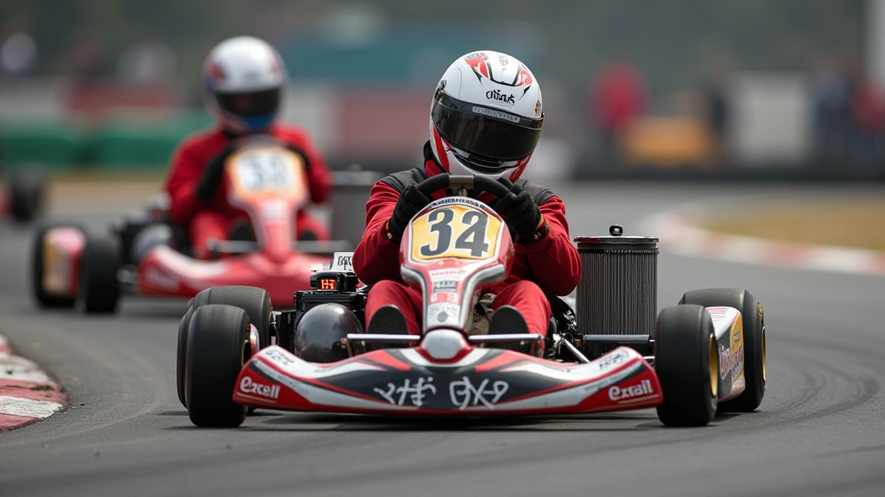
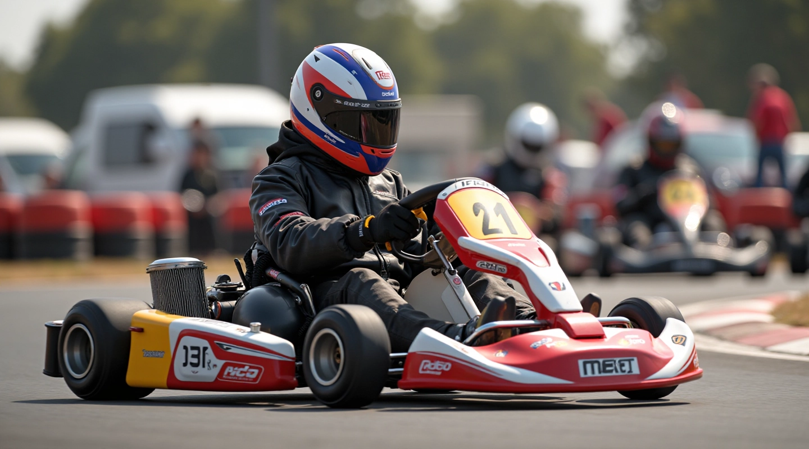
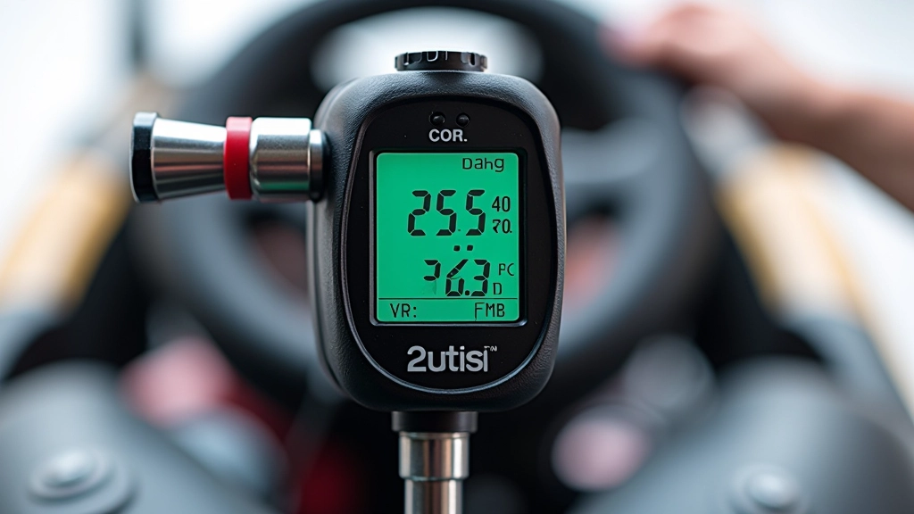
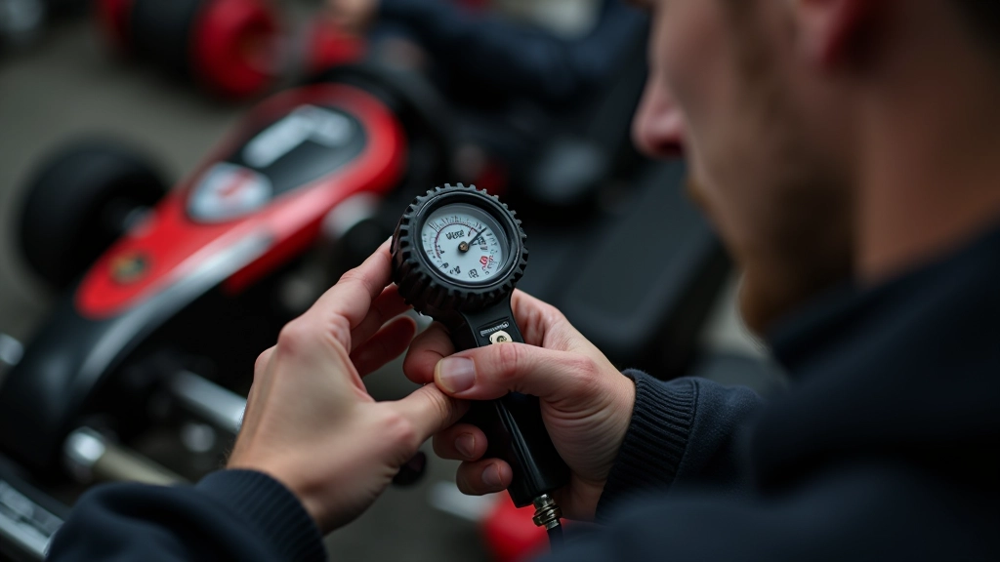
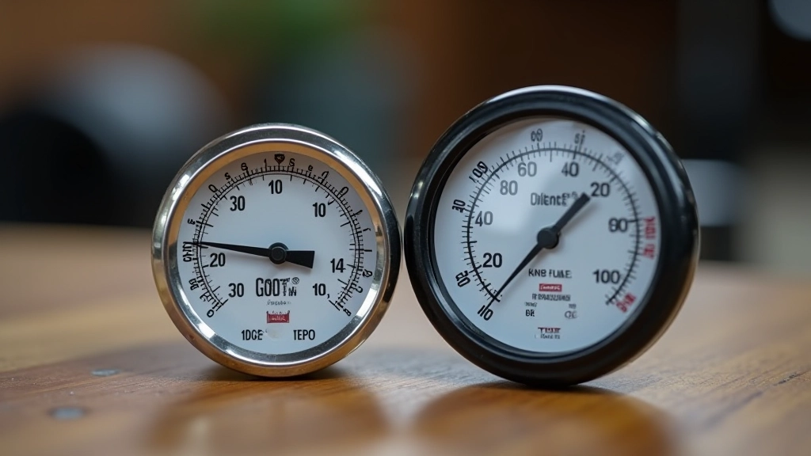

فهم ظروف المسار والطقس
كيفية تعديل إعدادات الكارت حسب حالة المسار الرطبة أو الجافة والتغيرات المناخية
خطوات عملية لقياس الضغط باستخدام مقياس دقيق وفهم التأثيرات على التعامل والسرعة

ضغط الإطارات هو من أكثر العوامل تأثيراً على أداء كارتك. إنه يؤثر على قبضة الإطار، الحرارة، التوازن، والسرعة القصوى. الكثير من السائقين لا يدركون أن ضغط خاطئ بمقدار ٠.٥ بار فقط يمكن أن يغيّر سلوك الكارت بشكل كبير على المسار.
الإطار الجيد يحتاج إلى ضغط دقيق. ليس أعلى ما يمكن، وليس أقل ما يمكن. نحن سنشرح لك كيفية القياس الصحيح والتعديل بناءً على ظروف المسار والطقس والأسلوب الخاص بك.
استخدم مقياس رقمي موثوق
الضغط يزيد مع ارتفاع درجة الحرارة
اضبط بناءً على ملاحظات الأداء
لا تستخدم مقاييس رخيصة أو قديمة. المقياس الرقمي هو الخيار الأفضل — يعطيك قراءة فورية وسهلة على شاشة صغيرة. دقة ±٠.١ بار كافية للبدء.
هناك نوعان شائعان: مقياس اليد الرقمي ومقياس الرأس (الذي تركبه على الصمام مباشرة). الاثنان جيدان، لكن اليد الرقمي أسهل في الاستخدام. تأكد من أن المقياس معايَر وتفقده كل موسم.

هذا الدليل مقدم لأغراض تعليمية وتوضيحية. الضغط الأمثل يختلف حسب نوع الكارت والإطار وحالة المسار. ابدأ بتوصيات الشركة المصنعة وعدّل بناءً على تجربتك. إذا كنت تشعر بعدم الاستقرار على المسار، استشر سباقاً متمرساً أو فني إعداد.

الوقت مهم جداً. قس الضغط في الصباح قبل الجلسة الأولى — عندما تكون الإطارات باردة. لا تقس بعد التدريب مباشرة، لأن الحرارة ترفع الضغط بشكل كبير.
اترك الكارت يبرد لمدة ساعة واحدة على الأقل
فك غطاء الصمام برفق (لا تفقده!)
ضع المقياس على الصمام بقوة متساوية
انتظر ثانية واحدة وسجل القراءة
هنا يأتي الجزء الذي يخطئ فيه معظم السباقين. الضغط يرتفع مع الحرارة. كقاعدة عامة، كل ٥ درجات مئوية ارتفاع في درجة الحرارة، يزيد الضغط بمقدار ٠.١ بار تقريباً. إذا كان الطقس حاراً أو كنت تدرب على مسار أسفلت داكن، توقع أن يرتفع الضغط.
قياسك الأول (الإطار البارد) هو الأساس. بعد الجلسة الأولى، قس الضغط مرة أخرى. إذا ارتفع ٠.٣ بار أو أكثر، هذا طبيعي تماماً. لكن إذا ارتفع أكثر من ٠.٥ بار، قد تحتاج إلى خفض الضغط الأولي قليلاً.
مثال عملي:

التعديل ليس عشوائياً. غيّر الضغط بمقدار ٠.١ بار فقط في المرة الواحدة، وجرّب جولة كاملة. انتظر ثم قيّم الفرق. هل الكارت أسرع؟ هل شعرت بقبضة أفضل في المنعطفات؟
إذا كان الكارت يشعر "مرتخياً" في المنعطفات (يتحرك الإطار تحت الجسم)، ارفع الضغط قليلاً. إذا كان الكارت "قاسياً" جداً (غير مريح)، اخفضه. التوازن هو المفتاح.
ارفع الضغط إذا: الكارت مرتخي أو تشعر بانزلاق
اخفض الضغط إذا: الكارت قاسي جداً أو تشعر بعدم راحة
ضغط الإطار ليس معقداً كما يبدو. استخدم مقياس جيد، قس بارد، وعدّل ببطء. كل كارت ومسار مختلف، فلا توجد قيمة سحرية واحدة تناسب الجميع. الشيء المهم هو أن تبدأ بالقياس والتسجيل.
احتفظ بدفتر صغير: سجل الضغط الأولي، درجة الحرارة، الطقس، وملاحظات الأداء. بعد عدة جلسات، ستلاحظ النمط وستعرف بالضبط ما يناسبك. هذا هو السر — الملاحظة والممارسة المستمرة.